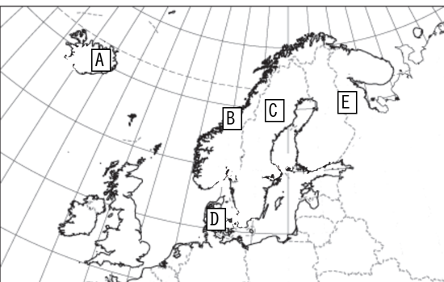
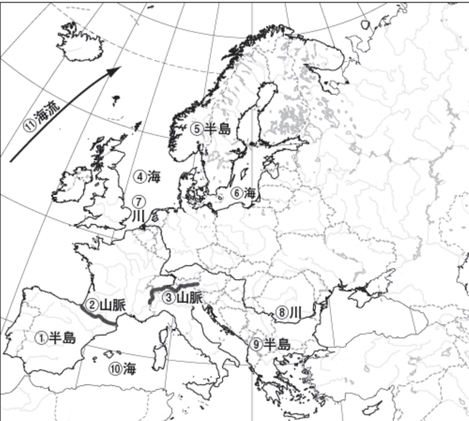

大設問3 次の地図Ⅰ・地図Ⅱは北欧、地図Ⅲはヨーロッパを示したものである。これらを見て、≪ 28 ≫〜≪ 41 ≫および≪ い ≫に答えなさい。

地図Ⅰ

地図Ⅱ

地図Ⅲ
問1 ≪ 28 ≫：地図Ⅰ中のB・Cの国名の組合せとして適切なものはどれか。
①B ノルウェー・C スウェーデン
②B スウェーデン・C ノルウェー
③B ノルウェー・C フィンランド
④B フィンランド・C スウェーデン
≪ 28 ≫
問2 ≪ 29 ≫：地図Ⅰ中のD・Eの国名の組合せとして適切なものはどれか。
①D フィンランド・E デンマーク
②D オランダ・E フィンランド
③D デンマーク・E フィンランド
④D デンマーク・E エストニア
≪ 29 ≫
問3 ≪ 30 ≫：地図Ⅰ中のAの国名を選びなさい。
①フェロー諸島②グリーンランド③エストニア④アイスランド
≪ 30 ≫
問4 ≪ 31 ≫：地図Ⅱ中のオの都市名を選びなさい。
①タンペレ②ヘルシンキ③トゥルク④オウル
≪ 31 ≫
問5 ≪ 32 ≫：地図Ⅱ中のエの都市名を選びなさい。
①コペンハーゲン②オーフス③オーデンセ④オールボー
≪ 32 ≫
問6 ≪ 33 ≫：地図Ⅱ中のア〜オのうち、ストックホルムの位置を選びなさい。
①ア②イ③エ④ウ
≪ 33 ≫
問7 ≪ 34 ≫：2026年11月現在、NATOに加盟していない国を選びなさい。
①ポーランド②トルコ③スイス④イタリア
≪ 34 ≫
問8 ≪ 35 ≫：2026年11月現在のNATOの加盟国数を選びなさい。
①26②28③30④32
≪ 35 ≫
問9 ≪ 36 ≫：地図Ⅰ中のA〜Eのうち、EUに加盟していない国の組合せを選びなさい。
①AとB②BとC③CとD④DとE
≪ 36 ≫
問10 ≪ 37 ≫：地図Ⅰ中のBの国の西岸に多くみられる、氷河のU字谷に海水が進入した地形を選びなさい。
①リアス海岸②フィヨルド③ラグーン④三角州
≪ 37 ≫
問11 ≪ 38 ≫：地図Ⅰ中のA〜Eのうち、2023年にNATOに加盟した国を選びなさい。
①B②C③D④E
≪ 38 ≫
問12 ≪ 39 ≫：地図Ⅲ中の④の海名を選びなさい。
①バレンツ海②黒海③北海④カスピ海
≪ 39 ≫
問13 ≪ 40 ≫：地図Ⅲ中の⑧の川名を選びなさい。
①ボルガ川②ロアール川③ポー川④ドナウ川
≪ 40 ≫
問14 ≪ 41 ≫：地図Ⅲ中の⑨の半島名を選びなさい。
①アペニン半島②バルカン半島③ペロポネソス半島④クリミア半島
≪ 41 ≫
問15 ≪ い ≫：地図Ⅱ中のイの都市名を答えなさい。
≪ い ≫